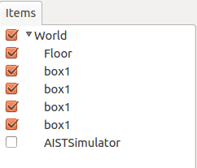

物理シミュレーションの実行¶
このチュートリアルでは、Choreonoidを使って物理シミュレーションを行う方法を説明します。
設定¶
メインメニューでの操作:
Worldアイテムを作成（ “File” -> “New...” -> “World”を選択）。
AISTSimulatorアイテムを作成（”File” -> “New...” -> “AISTSimulator”を選択）。
Modelアイテムのロード（”File” -> “Open...” -> “OpenHRP Model File”を選択）。
Itemパネルでの操作:
アイテムをドラッグアンドドロップして以下のように並べます（modelアイテムとsimulatorアイテムはworldアイテムの下になければなりません）。
